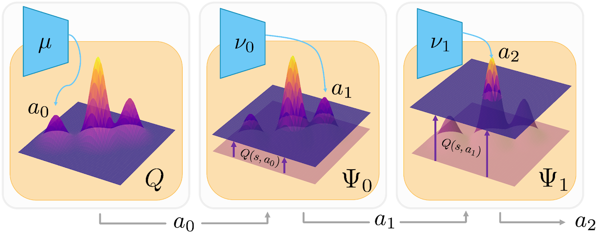
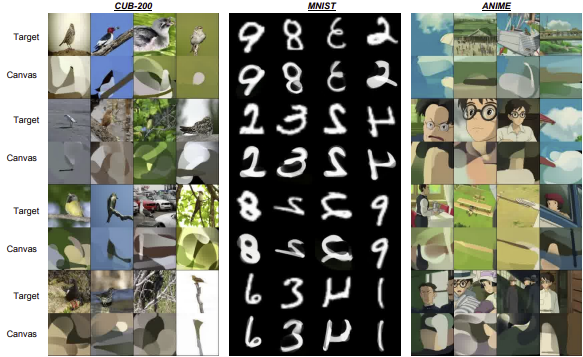

email:
kosakaboat[at]gmail.com
|
|
|  |
Interview pitchWe introduce SAVO, a successive-actor method that prunes low-value regions in complex Q-landscapes so TD3 avoids local optima, delivering higher returns and better sample efficiency across MuJoCo, Adroit, RecSim and gridworld. |
|  |
Interview pitchWe make critics evaluate the predicted afterstate (next state) rather than raw actions, simplifying value estimation; plugged into DDPG/SAC this yields faster, stabler learning on MuJoCo, PaintGym and RecSim. |
 |
Interview pitchDPPO learns policies directly from preference labels (no reward model), improving robustness and efficiency on D4RL/Adroit/Kitchen and transferring to RLHF for LLMs. |
 |
Interview pitchAGILE uses a graph-attention policy to model dependencies between available actions, boosting performance and generalisation in tool-use and recommender settings. |
 |
Interview pitchWe add Bayesian model and action uncertainty (ensembles + probabilistic MPC) to PlaNet, improving planning robustness and sample efficiency on DeepMind Control Suite. |
 |
Interview pitchAn ablation-driven study of DDPG exploration (noise processes, BatchNorm, on/off-policy) vs SAC/GNN policies on MuJoCo, Centipede and gridworld, explaining when and why DDPG fails to explore. |